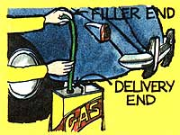
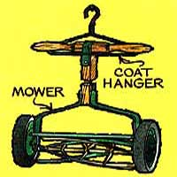
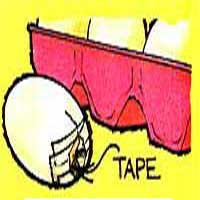
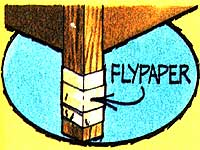
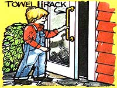
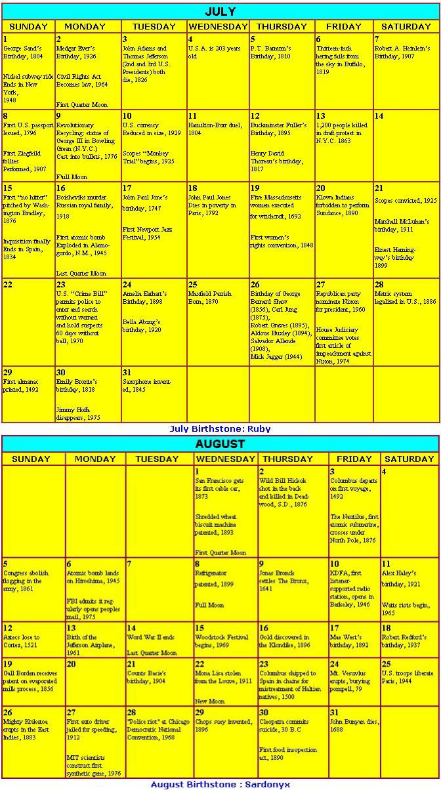

Mother's Bi-Monthly Almanac
Hang it up; It's a gas; Put humpty dumpty together again; Catch more than flies; A family door handle; An improvised tripod.
By the Mother Earth News editors
July/August 1979
IT'S A GAS!
If you've ever gotten a mouthful of gasoline while siphoning fuel from a car, you'll be happy to learn this trick: Simply insert the hose into the tank . . . and pinch it tightly at the "filler" end with the fingers of your left hand. Next, squeeze firmly right below that point with the thumb and index finger of the right hand, and press the air out slowly toward the "delivery" tip of the hose. Just before you reach the end, release the fingers of the left hand. Wait a second, then release the fingers of the right hand. The partial vacuum created will be enough to cause the gas to flow.
HANG IT UP!
A coat hanger, as you know, can serve many purposes besides holding garments . . . and here's another use: Just hang a "clothes supporter" at a proper height on a nail, and insert your lawnmower handle through it to keep the machine against the wall.
PUT HUMPTY DUMPTY TOGE-THER AGAIN
Don't cry over cracked eggs. You can prevent leakage and stop deterioration if you seal the hen fruit with Scotch tape. After such repairs, your patched breakfast eats will stay as fresh as their unbroken companions.
CATCH MORE THAN FLIES
If ants invade your kitchen, attach flypaper-sticky side out along the bottom of your cabinets (or around table legs) to form an impenetrable barrier. By the time you have to change your adhesive sheets, the social little critters will probably realize they're not wanted ... and move on to happier hunting grounds.
A FAMILY DOOR HANDLE
Do you have a small child who can't quite reach the knob to open a screen door? Well ... just remove that old door handle and replace it with a vertically positioned towel rack (painted black or whatever color suits your decor), and you'll have a sturdy door opener that's convenient for youngsters and adults alike.
AN IMPROVISED TRIPOD
The next time you're off in the woods and need to hang a pot over the campfire ... cut three stout sapling sticks, Insert the ends in the mouth of an empty can, and set the opposite tips on the ground to make a triangular support. (Just be sure the stakes are long enough to permit a wide spread, so they don't catch on fire.) If the can's open lid is still securely attached to one side, you can then punch a hole in the "flap" and insert a wire hook to support your kettle.
|
 |
 |
 |
|
 |
 |
 |
|
 |
|
|